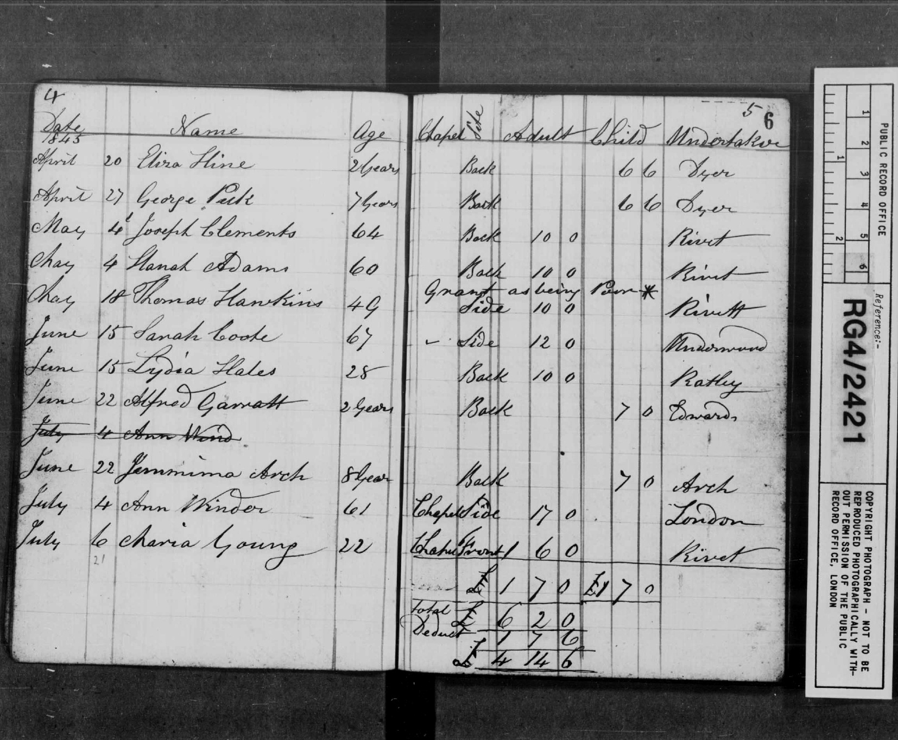

Hannah nee Taylor Rudge Adams' Burial Record

BURIAL RECORD: "1845... May 4 Hanah [sic] Adams [age] 60 back [location of grave?] Rivett [undertaker]" Register of Burials at Brickfields Chapel or Stratford Congregational Church in the parish of West Ham, Essex from 1845 to 1851. RG4/ Piece 2421/ Folio 6.
Last updated on 22 Mar 2010